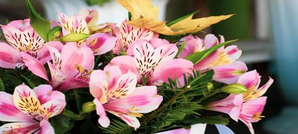
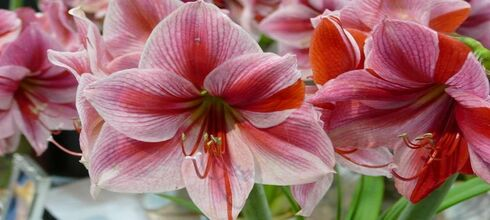
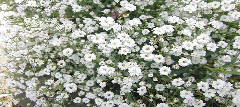

Nos Fleurs
Alstroemeria
Des régions fraîches de montagne des Andes, alstroemeria, également connu sous le nom de lys des Inca, est un beau fleur avec les pétales rayés. Ils viennent dans l'orange, le rose, le rouge, le violet, le jaune, le blanc et les couleurs de saumons
En savoir plusClochettes d'Irlande

Bells de l'Irlande semblent habituellement avoir des transitoires des fleurs blanches et des calices verts de lumineux. Ils peuvent se développer en conditions dures avec le sol pauvre. Le fleur est indigène en Turquie...
En savoir plusAmaryllis
Le amaryllis est une usine monotypic qui contient la belladone lys de amaryllis. Habituellement connu pour ses fleurs colorées, ils sont habituellement entonnoir formé et viennent dans le blanc, le violet ou le rose.
En savoir plusGypsophilia
Sol et exposition idéals pour planter une Gypsophile au jardin. La Gypsophile aime la terre calcaire, avec un sol profond et très bien drainé puisqu'elle n'aime pas l'humidité hivernale.
En savoir plus